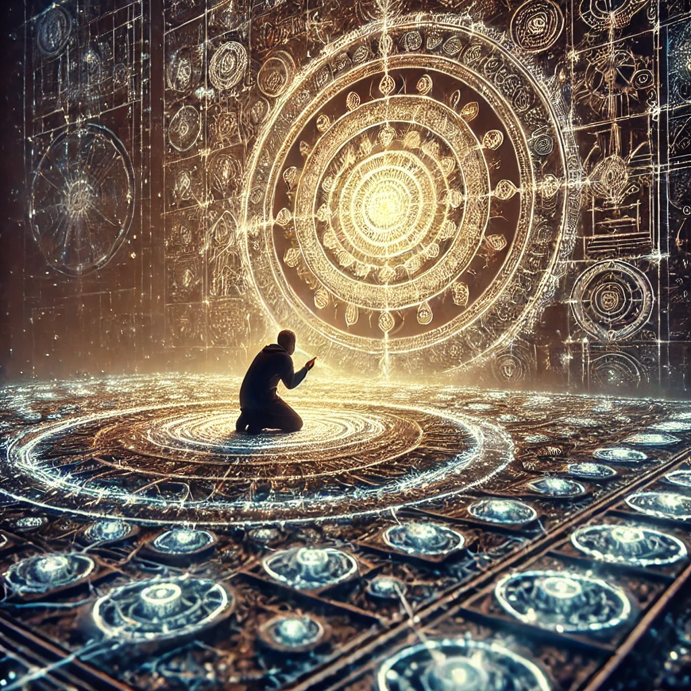

You kneel before the glowing glyphs, their patterns shifting faintly under your gaze. Each symbol seems alive, pulsing with a rhythm that mirrors your heartbeat. You feel the weight of their meaning, as though they carry messages from an ancient and forgotten source.
Carefully, you trace the shapes with your fingers, and flashes of insight begin to emerge. You see fractal-like patterns connecting each glyph to another, forming an intricate web of knowledge. A faint voice whispers in the back of your mind:
“The glyphs are a map, but also a key. They carry the knowledge of creation and the threads binding all existence. What will you seek from them?”
The symbols begin to glow brighter, urging you to choose a direction for your analysis.

What aspect of the glyphs will you focus on?